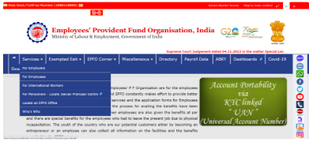

PF Claim Status
Individuals with an EPF account are allowed to withdraw the accumulated funds during their employment under specific circumstances by submitting the relevant EPF forms. Keeping track of the PF claim status is essential to know the progress of the claim process. EPF members should keep themselves up to date to know how much of the claim process is completed smoothly.
To begin with, they should learn how to check the PF claim status and the associated requisites.
What is EPF Claim Status?
EPF claim status can be described as the latest information available about one's application for EPF withdrawal.
It helps to gain a fair idea of their claim process’s development. Further, it enables applicants to readily prepare in advance for the next step in the claim process. With the advancements in technology, the PF claim status can be checked in different hassle-free ways.
How to Check PF Claim Status?
Individuals who have submitted an EPF withdrawal request and made a claim or have already applied for PF withdrawal can track the status of their PF claim online or offline. To elaborate, the following information highlights various ways through which one can check the status of their PF claim.
How to Check PF Claim Status Online?
Following are the ways to check Online PF Claim status:
Through UAN Member Portal
Employees can check the claim status of their PF on the UAN Member Portal by following these few simple steps:
- Step 1 - Log in to your UAN Member Portal by entering your UAN and password.
- Step 2 - Click on option 'Online Services'.
- Step 3 - Click on ‘Track Claim Status’.
- Step 4 - The status of your EPF withdrawal or transfer status will appear on the screen.
Individuals who have submitted their offline claim process may not be able to track their claim status through this portal. Instead, offline applicants can track their status through EPFO’s official website.
Through the EPFO Portal
Individuals opting for this method to check EPF claim status online would have to proceed with the steps mentioned below:
Step 1 - To check online PF claim status via this route, visit EPFO's dedicated portal.
- Step 2 - Look for ‘Our Services’ option.
- Step 3 - From available tabs, click on ‘For Employee’.
- Step 4 - Once redirected to the next page, click on the ‘Services’ option.
- Step 5 - Next, open the ‘Know your Claim Status’ option.
- Step 6 - Enter UAN and CAPTCHA in the respective blocks.
- Step 7 - Follow with clicking on the ‘Search’ option.
- Step 8 - Next, select ‘Member ID’.
- Step 9 - At last, click on ‘View Claim Status’ option to check the progress of your PF claim.
Using the PF Account Number Without UAN
Employees can also perform a PF claim status check online with the help of their PF account number in a few simple steps without using UAN:
- Step 1 - Visit EPFO's official website.
- Step 2 - Navigate to the ‘Know your Claim Status’ page.
- Step 3 - Open the ‘Click here for Knowing the Claim Status’ option.
- Step 4 - Next, select your respective PF Office State from the drop-down menu.
- Step 5 - Next, select your city from the drop-down menu.
- Step 6 - Next, enter your PF account number.
- Step 7 - Click ‘Submit’.
On entering accurate details, the applicant’s PF claim status would appear on the screen immediately. Similarly, individuals who have updated their current mobile number with their UAN can check their claim status on the Umang App.
Claim Status via the Umang App
- Step 1 - Look for EPFO option on the App’s home page.
- Step 2 - Select ‘Employee Centric Services’ option.
- Step 3 - Next, open the ‘Track Claim’ option.
- Step 4 - Enter UAN and click on ‘Get OTP’.
- Step 5 - Enter the OTP generated to verify and click on the ‘Login’ option.
By completing these steps, employee would avail details like - tracking ID, type of claim, the date on which the claim was raised, and so on.
Most applicants tend to opt for the online PF claim status option, as it is hassle-free and can be completed within a few minutes. Also, they do not need to furnish any documents to initiate the same.
Conversely, if applicants are not quite confident about the online methods, they may opt for alternate options that are available to them.
How to Check PF Claim Status Offline?
Through an SMS
Applicants can track whether their PF claim status is under process by sending an SMS from the mobile number that is registered with your UAN. You must pay attention to the SMS format before sending it to a required number to track their claim status accurately.
For instance, the latest SMS format is ‘EPFOHO UAN LAN’. Here ‘LAN’ stands for the language code in which users want to receive claim status updates.
| EPFOHO UAN LAN(Language) | LAN Code |
|---|---|
| English | ENG |
| Hindi | HIN |
| Bengali | BEN |
| Tamil | TAM |
| Telugu | TEL |
| Marathi | MAR |
| Punjabi | PUN |
| Malayalam | MAL |
| Kannada | KAN |
| Gujarati | GUJ |
Through a Missed Call
Employees can also check their claim status by giving a missed call from their registered mobile number on the toll-free number: 011-22901406.
Once the call is automatically disconnected, individuals will receive information about their PF claim status on their registered mobile number through an SMS.
Notably, applicants would be required to update their Aadhaar details, PAN and details of the bank account at the EPF portal.
Who Can Make EPF Claims?
Anybody with an EPF account would be considered eligible to claim the accumulated funds under the following situations:
Post-retirement
Account holders who are over the age of 58 years can claim the entire EPF corpus. Conversely, those who have opted for early retirement at 55 years would be allowed to claim the entire corpus.
Prior to Retirement
Employees who are 54 years of age can claim up to 90% of their EPF corpus, provided they retire after one year.
In the case of Unemployment
Account holders can claim up to 75% of their EPF corpus in the event of being unemployed for over a month. However, on starting a new job, they would be required to transfer 25% of the same to their EPF account. Individuals who are unemployed for over two months can withdraw the entire amount from their account.
Further, such partial withdrawal is allowed only in the case of funding required for higher education, medical emergencies, or for constructing or purchase of a house property.
How to Initiate EPF Claim Process?
Before initiating the PF claim online or offline, applicants would be required to submit the respective claim form to the concerned authority.
To elaborate, factors like an applicant's age, their status of employment and reason for withdrawal are taken into consideration to decide which form would be suitable for a given case.
The table below highlights the suitable claim form against each situation.
| Form | Case Suitability for PF Claim |
|---|---|
| Form 13 | To transfer the accumulated fund into a new EPF account in the case of a job change. |
| Form 14 | To pay for one’s LIC policy. |
| Form 31 | To claim advance/temporary withdrawal of EPF. |
| Form 10D | To claim pension fund when the account holder is less than 58 years of age and has to leave an establishment owing to physical disability. |
| Form 20 | A nominee can claim the PF of the deceased EPF member. |
| Form 10C | To claim Scheme Certificate/Withdrawal Benefit as per Employees' Pension Scheme. |
How to Cancel EPF Claim?
It must be noted that once the claim status has been initiated, an option to cancel it online does not exist. Nonetheless, applicants may contact the EPFO Regional Office as soon as possible to cancel their request for EPF withdrawal that was initiated online.
Explore Related Calculators
| APY Calculator | PPF Calculator |
| NSC Calculator | EPF Calculator |
| Sukanya Samriddhi Yojana Calculator | NPS Calculator |